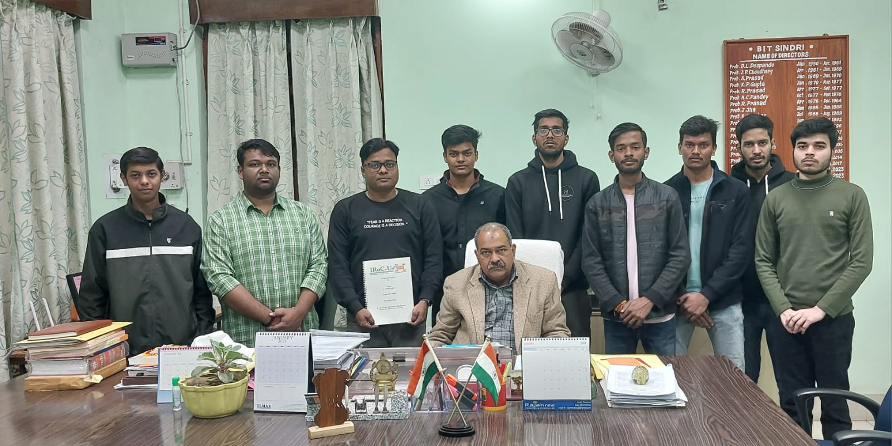

A Dynamic Hub for Aerospace & Robotics
The Aero and Robotics Club (ARC) at BIT Sindri is a dynamic hub for students passionate about aerospace engineering and robotics. Our mission is to inspire and equip members with the knowledge and hands-on skills needed to excel in these cutting-edge fields.
ARC provides a vibrant platform for students to explore, learn, and apply their expertise through practical projects, competitions, workshops, and research. Our hands-on approach includes activities like building lunar rover models, designing autonomous UAVs, and competing in prestigious events such as the World Robotics Championship, AIAA Design Build Fly, and University Rover Challenge.
We are dedicated to fostering a culture of innovation, collaboration, and excellence, contributing to the advancement of aerospace engineering and robotics. ARC also focuses on the professional and personal development of its members, nurturing a community of aspiring engineers and innovators.
